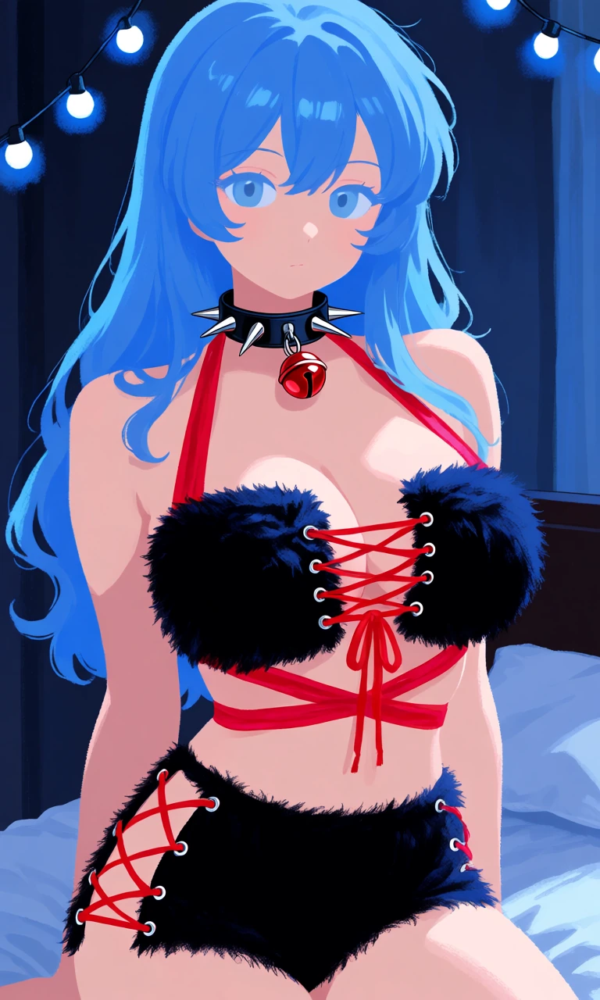

Midnight Wolf

Outfit Prompt
The bra features two separate square-shaped coverage panels made entirely of short, dense, plush jet-black faux fur, with soft velvety texture and neatly finished edges. The two black faux-fur squares are connected across the center of the chest by thin cherry-red fabric laces threaded through small silver metal eyelets, forming a neat, open crisscross pattern. Matching cherry-red fabric halter straps extend around the neck, while additional cherry-red fabric ties wrap around the torso and fasten at the center back.
Matching snug-fitting, low-rise boyshort panties made entirely of the same short, plush jet-black faux fur, with full boyshort-style rear coverage and a fitted silhouette. Both outer hips feature open side sections where the separated faux-fur fabric edges are connected by adjustable cherry-red fabric laces, threaded through small silver eyelets in a crisscross pattern, leaving small diamond-shaped openings along the hips.
Around the neck is a smooth black faux-leather gothic collar decorated with long, pointed silver-tone metal spikes evenly spaced around the band. A single glossy metallic cherry-red jingle bell hangs from a silver-tone ring at the center front of the collar.
Outfit Examples

